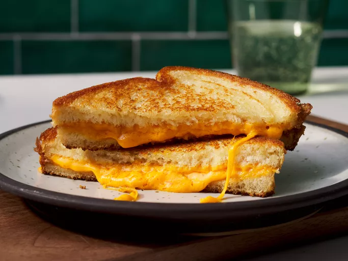

Grilled Cheese

Description
Grilled cheese is a classic comfort food: buttery, golden bread wrapped around melted cheese. It’s simple, quick, and needs only a few ingredients you probably already have.
The key is cooking it low and slow, so the bread gets crispy while the cheese fully melts. It’s great on its own or paired with a bowl of tomato soup.
Ingredients
- 2 slices of bread (sourdough or white work well)
- 2 slices of cheddar cheese
- 1 slice of american cheese (optional, for extra meltiness)
- 1 tablespoon butter, softened
Steps
- Spread the softened butter on one side of each slice of bread.
- Heat a pan over medium-low heat.
- Place one slice of bread in the pan, butter side down.
- Layer the cheese on top of the bread.
- Place the second slice on top, butter side up.
- Cook for 3 to 4 minutes, until the bottom is golden brown.
- Flip the sandwhich and cook another 3 to 4 minutes, until the other side is golden and the cheese is melted
- Remove from the pan, cut in half, and serve
Homepage